Only the Administrator, authorized users, and those with Access Control designated as 'Accounting' in their user profile can access OpenEMR's Billing system.
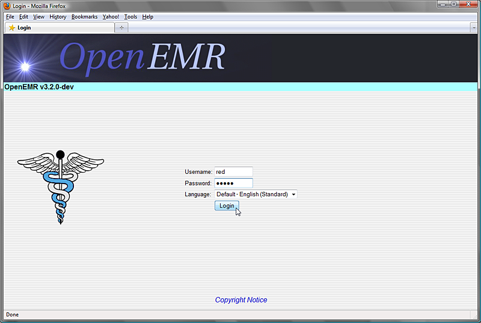To begin, log in with your designated username and password.
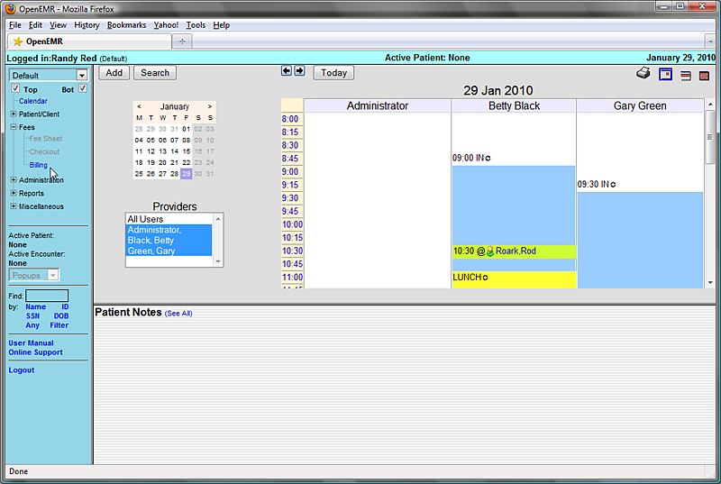Select 'Fees - Billing' from the navigation menu on the left. This brings you to the main Billing screen. This will present you with options to generate a variety of printable and electronic claims and reports.
The Billing Report page will automatically display any billable encounters that were generated today. To view billables from a different time period enter the 'From' and 'To' dates using the date selection tool, and click 'Update List' in the top right corner of the screen.
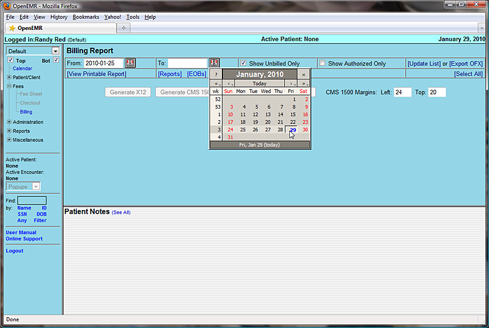The list should now display all billables from the selected date range.
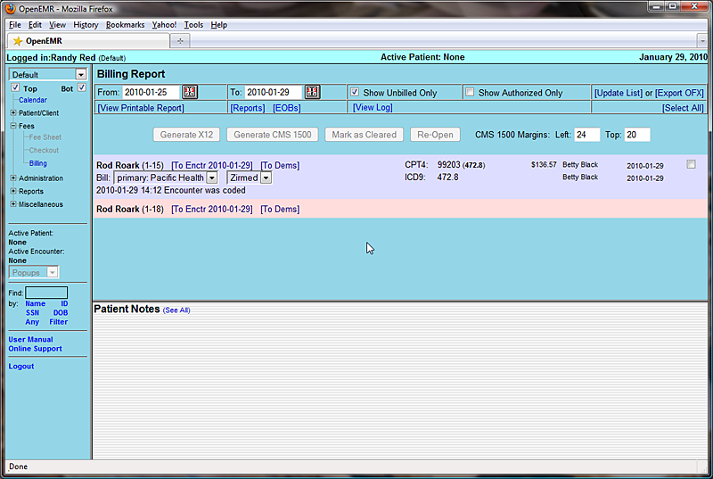Clicking the checkbox to the right of the desired encounter will enable a set of buttons for generating claims. Your system should be configured with the appropriate set of forms for the insurance companies and clearinghouses used by your clinic.
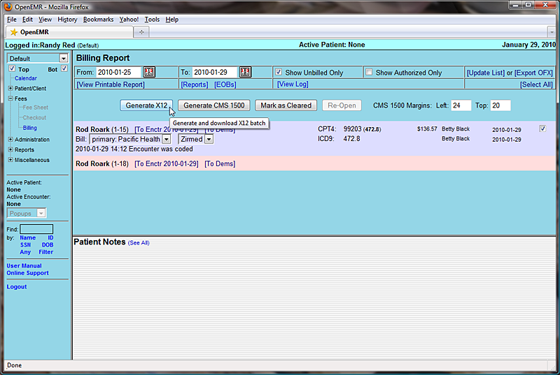Click 'Generate X12' to create a claim file that is suitable for sending to the clearinghouse.
OpenEMR will present you with a confirmation popup, reminding you to check the log file after you have finished generating your claims.
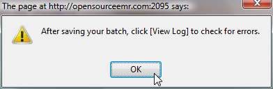Click 'OK' to proceed.
The standard Save File dialog should appear, allowing you to save the generated batch file to your computer.
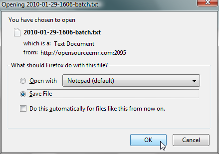Once the file has been saved, click 'View Log' to check whether the claims were generated successfully.
If there were any errors in the claim generation process, they will be displayed here. Otherwise you will see a note indicating that the file was generated successfully.
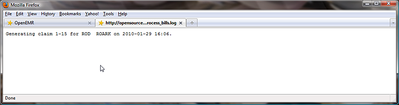The downloaded claim file should contain the necessary encounter information, formatted for billing. This is what will be sent to the clearinghouse, by whatever method has been specified.
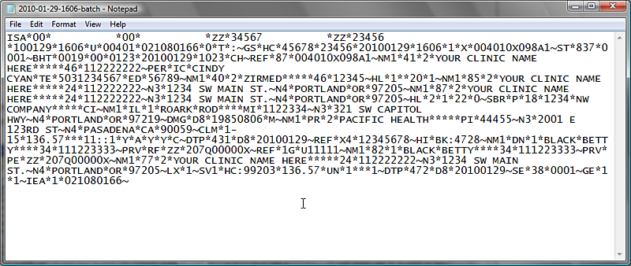Uncheck 'Show Unbilled Only' and click 'Update List' to refresh the billing list and see the updated status of the encounter.
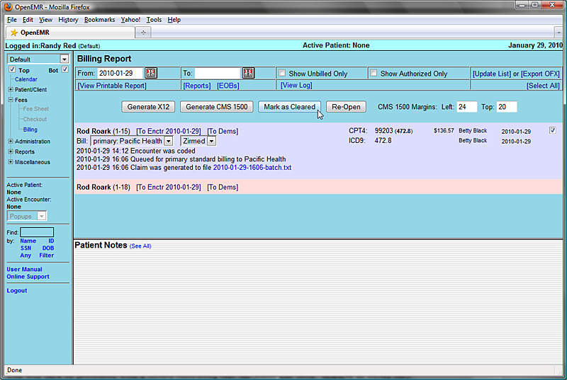Click 'Mark as Cleared' to indicate that billing has been completed for this encounter.
You will then be presented with a screen indicating that the claim has been “marked as billed only.”
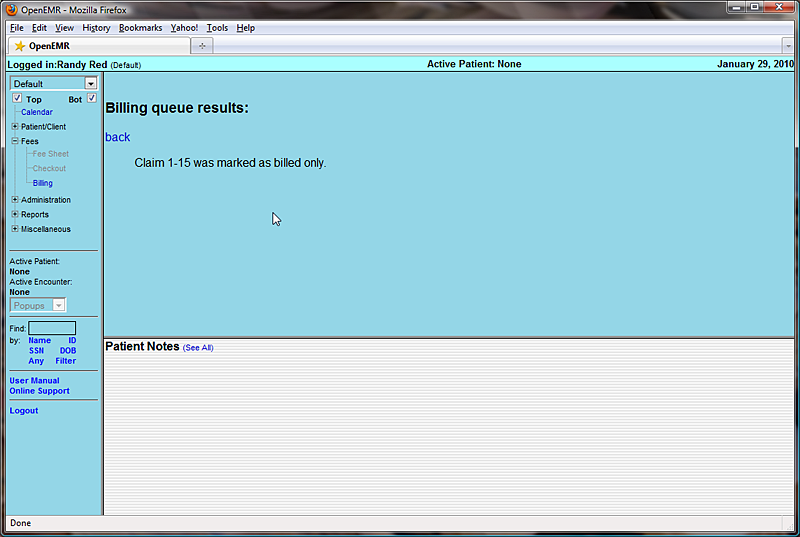Click 'Back' to return to the Billing Report page.
In OpenEMR multiple forms may be generated for each claim.
For example, re-enter the desired date range, uncheck 'Show Unbilled Only' and click 'Update List' again to show the current status of the claim. You can see that the claim has been “Marked as cleared.”
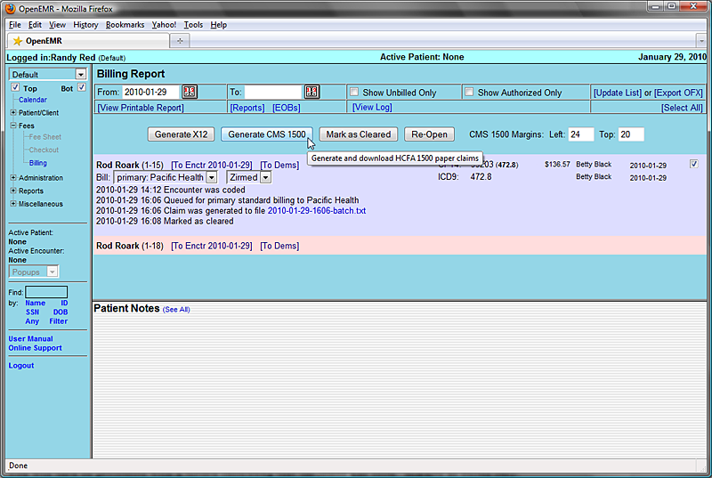Check the box to the right of the encounter and click 'Generate CMS 1500'.
OpenEMR will now generate a PDF of the HCFA claim, based on the standard HCFA form template. The new form can be viewed using a PDF viewer, or printed automatically on a pre-printed HCFA 1500 form, depending on your system's configuration.
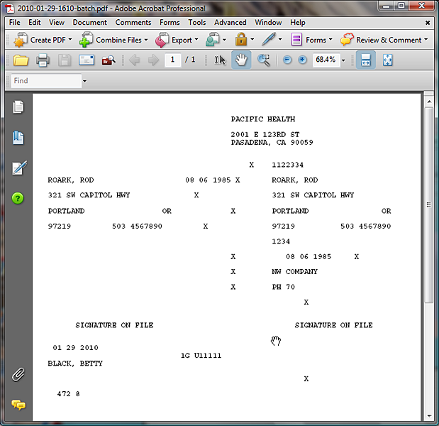Returning to the Billing Report and clicking 'Update List', you can see that the status of the billable encounter has been updated.
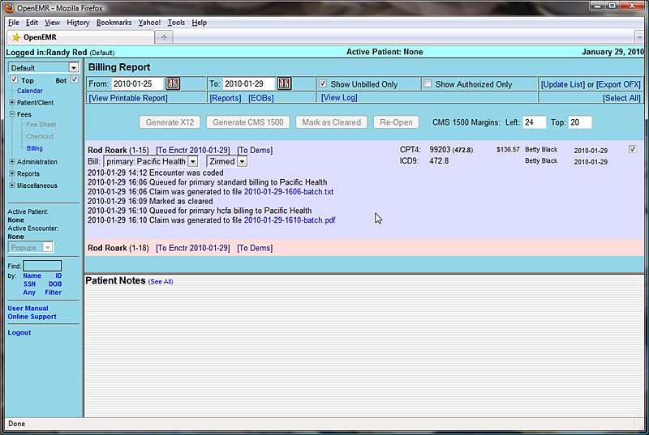